クラスターガジェット
クラスターガジェット
概要
Originはグラフ内の「関心のある範囲」（Region of interest, ROI）で簡単な統計を行う、クラスターガジェットをサポートしています。このガジェットではデータポイントの編集、消去、マスクができます。ROIオブジェクトを移動したり大きさを変えると、統計結果が更新されます。
必要なOriginのバージョン: Origin 2016 SR0以降（Pro版のみ）
学習する項目
- 「関心のある範囲」（Region of interest, ROI）で簡単な統計を行う方法
- データポイントの編集、例えば消去のやり方や、グラフ内の点をメニューやボタンを使ってマスクする方法
- ROI範囲の中または外のポイントを使って統計的な出力をする方法
- 分類されたデータにより、データを分類しカラーマップする方法
基本統計を実施する
- 新規ワークブックを開始して、<Originプログラムフォルダ>\Samples\GraphingにあるOriginのサンプルデータ、Categorical Data.datをインポートします。
列Dを選択して右クリックし、ショートカットメニューからソート（ワークシート）：昇順を選択します。
ワークシートがDrugのカテゴリーでソートされたことが分かります。
- Ctrlキーを押しながら列Bの3か所を別々に選択します。
- 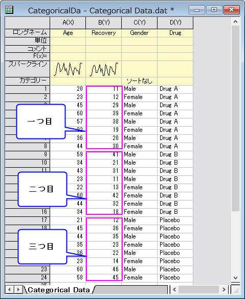
- メニューから作図：基本の2Dグラフ：散布図を選択して、グラフを作成します。それぞれの薬による回復率を示した3つのプロットが表示されます。

- グラフの凡例を右クリックしてプロパティを選んでオブジェクトプロパティダイアログを開きます。次の図のように凡例を編集します。OK ボタンをクリックします。
- 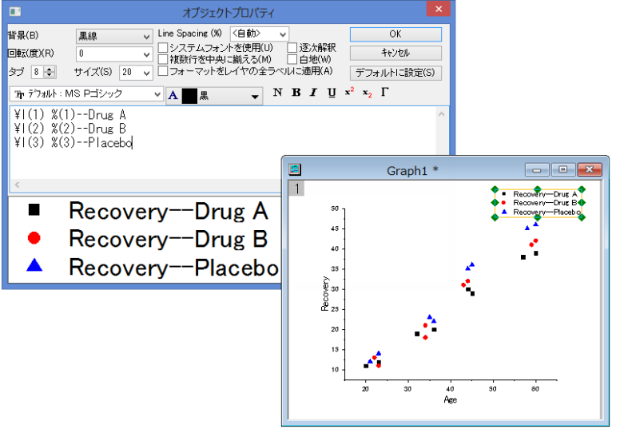
- ガジェット：クラスター操作を選び、クラスター操作: addtool_clusterダイアログを開きます。ROIボックスタブにある、形状のドロップダウンリストから円形を選びます。
- 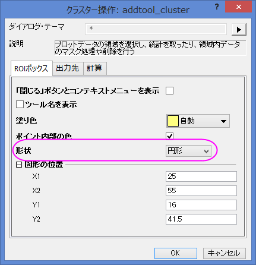
- OK ボタンをクリックします。OKをクリックすると、グラフ上にROIとして黄色の円が追加され、クラスターガジェットダイアログが開きます。
- 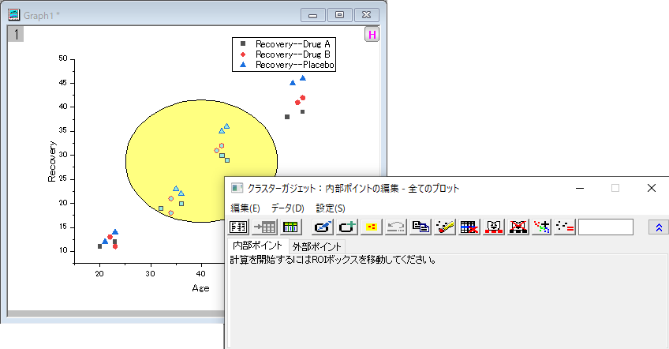
- 統計情報が欲しい範囲に黄色い円を移動すると、内部ポイントタブに情報が表示されます。
- 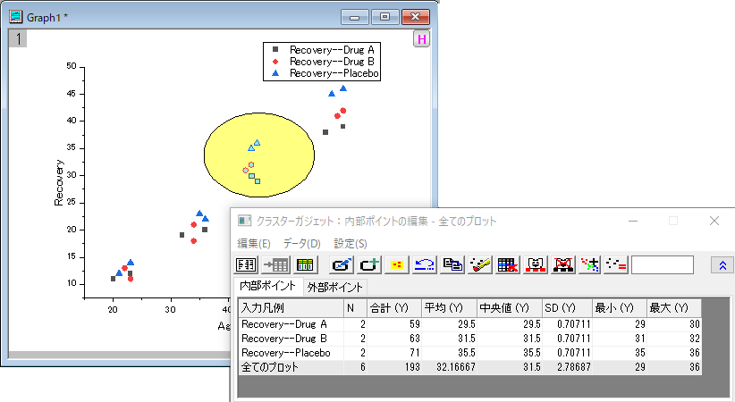
- 統計レポートを出力ボタン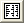をクリックします。
ボタンを押すと、結果ログ、スクリプトウィンドウ、クラスターワークブックを出力します。
- レポートシートに行くボタン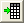クリックすると、クラスターワークブックを表示します。
- 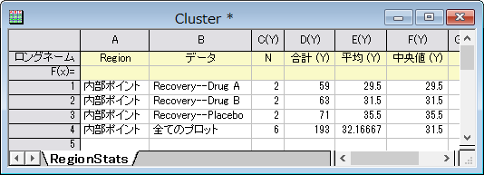
 | Origin2021b以降を使用している場合、ROIの形についてより多くの設定があります。クラスター操作ダイアログで形状を任意図形に設定します。OKをクリックすると小さなROIを作成ダイアログが開きますので形状のボタンをクリックしてROIを作成ダイアログを閉じずにドラッグしてグラフ上に形を描きます。ROIを描き終わるまでダイアログを開いたままにし、描き終わったら完了ボタンをクリックします。するとクラスターガジェットが開きます。
また、新しいクラスターガジェットツールバーにはROIの変更と新しいROIの追加（グラフに複数のROIを追加するための）ボタンがあります。
- 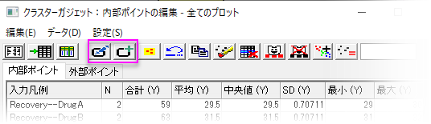
|
クラスター内にあるポイントを除外する
このセクションでは、テーマを使って、グラフをカスタマイズする方法を説明します。
上記例を元にRecovery of Placeboのデータを除外したRecovery of DrugAとRecovery of DrugBの簡単な統計を算出します。
- クラスターガジェットダイアログのデータメニューをクリックし、Plot(1)とPlot(2)のチェックを外します。下のパネルで1行目と2行目はグレーになり、ダイアログ内のボタンで操作できなくなります。
- データポイントのマスク ボタン
 をクリックします。
Recovery of Placeboのデータポイントがマスクされ、データポイントの色が赤くなります。同時に、Recovery of Placebo統計の数値が欠損値になります。
をクリックします。
Recovery of Placeboのデータポイントがマスクされ、データポイントの色が赤くなります。同時に、Recovery of Placebo統計の数値が欠損値になります。
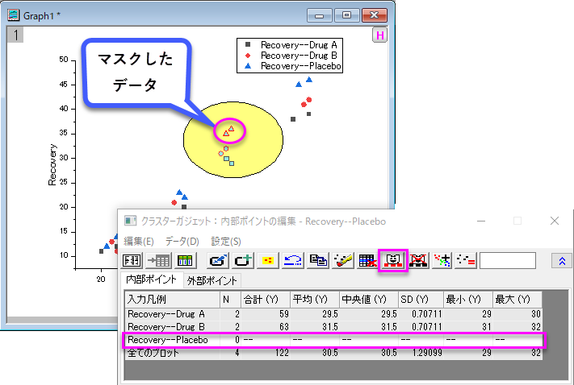
- 統計レポートを出力ボタンをクリックします。
ボタンを押すと、結果ログ、スクリプトウィンドウ、クラスターワークブックを出力します。
ROI範囲外の統計結果を入手する
- クラスターガジェットダイアログのメニューで設定：設定と選択し、クラスター操作設定ダイアログを開きます。
- 計算タブを開きます。外部ポイントを計算にチェックを付けます。
- 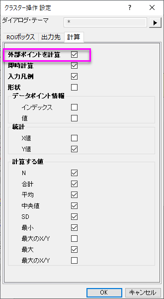
- OKボタンを押すとROIボックスの外側の統計結果を外部ポイントタブ内に表示します。
- 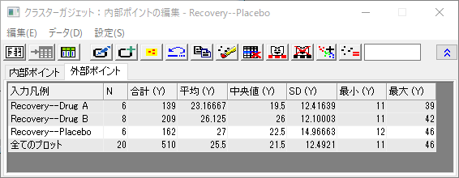
- 統計レポートを出力ボタンをクリックします。
内部と外部ポイントの結果は、結果ログ、スクリプトウィンドウ、クラスターワークブックに表示されます。
異なる範囲のポイントに色を付ける
グラフから直接データを分類し、元のワークシートのCategorical group columnに出力することが出来ます。また、Categorical group columnにシンボルキャラクターのマップも出力することができます。
新規ワークブックを作成し、<Origin Program Folder>\Samples\Graphing\Categorical Data.dat.を再インポートします。列Bを選択し、散布図をプロットします。
- 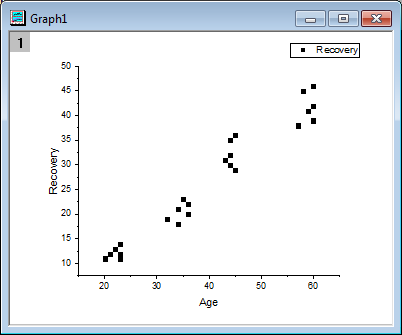
4つのグループにポイントはクラスター化されています。クラスターガジェットの、カテゴリを作成を使って、この列のクラスターグループやシンボルカラーのマップから、カテゴリ列を作成します。
- ガジェット：クラスター操作を選択し、クラスター操作: addtool_clusterダイアログを開きます。ROIボックスタブにある、形状のドロップダウンリストから円形を選びます。
OKをクリックすると、グラフ上にROIとして黄色の円を追加され、クラスターガジェットダイアログが開きます。
- 左下にある最初のデータ群だけが入るよう、ROIボックスの円を動かして大きさを調整します。
- 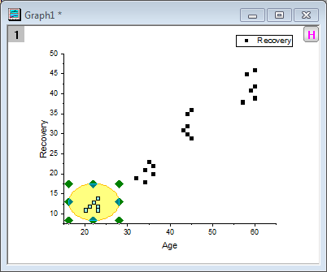
クラスターガジェットのカテゴリを作成ボタン  をクリックして、Create Categorical Value ダイアログを開きます。カテゴリグループ名にGroup、カテゴリに1と入力します。カテゴリーでデータを色付けチェックボックスを選択します。
をクリックして、Create Categorical Value ダイアログを開きます。カテゴリグループ名にGroup、カテゴリに1と入力します。カテゴリーでデータを色付けチェックボックスを選択します。
- 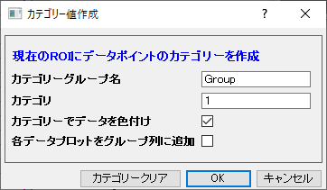
OKボタンをクリックします。Groupと名付けられた新しいカテゴリ列が元のデータシートに追加され、ROI内のデータポイントはこの(Group)列の中の"1"にタグ付けされます。散布図ではこのカテゴリ列をカラーインデックスとして使用します。
- 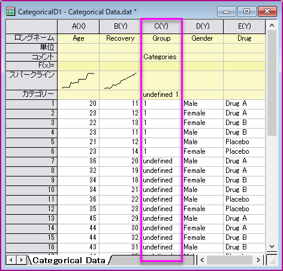
- 残りの3群にも同じステップを繰り返し、順に2,3,4とタグ付けします。
- 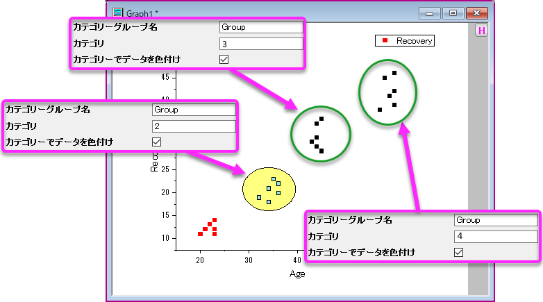
元のワークシートは次のようになります。
- 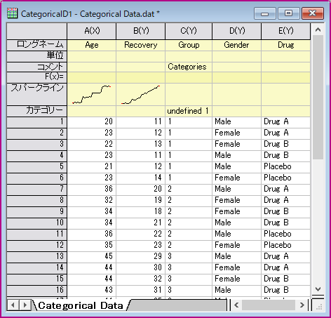
クラスターガジェットを閉じます。
- グラフは下図のようになります。
- 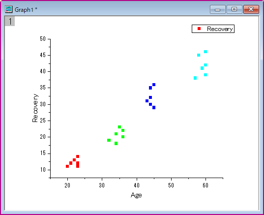
- 凡例を削除します。グラフ操作：凡例：カテゴリ値と選択し、legendcat ダイアログを開きます。全てのカテゴリーを表示チェックボックスのチェックを外します。OKをクリックします。新しい凡例付の散布図が次のようになります。
- 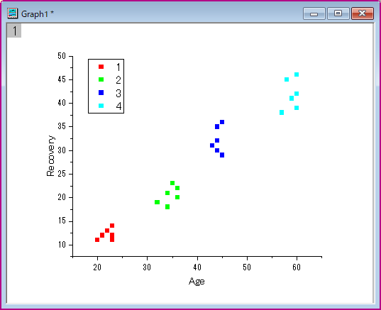